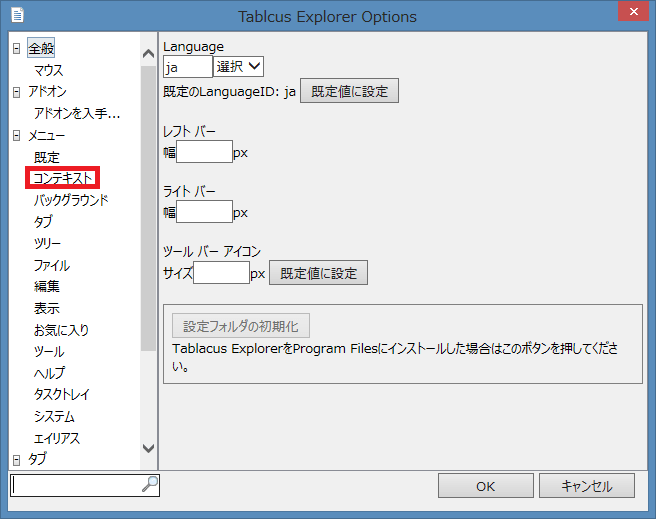
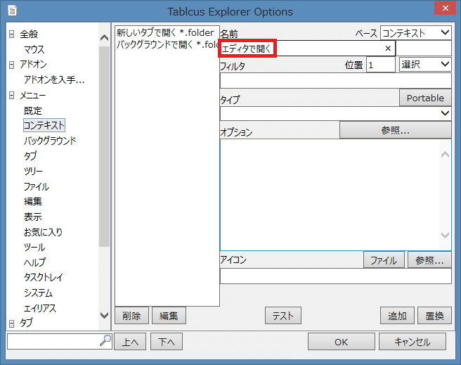
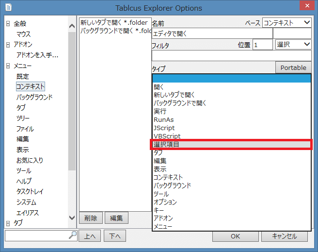
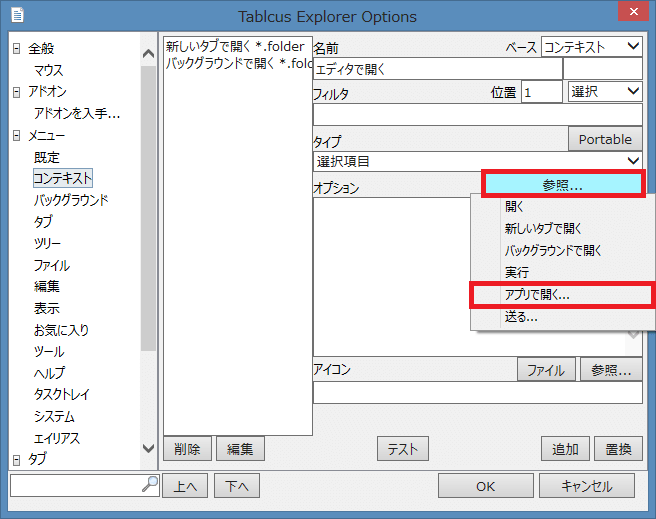
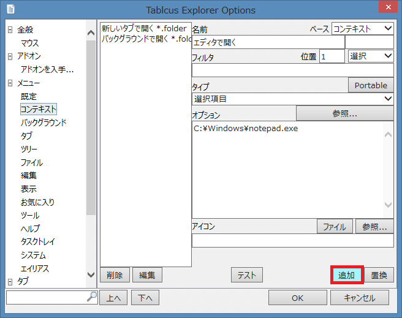
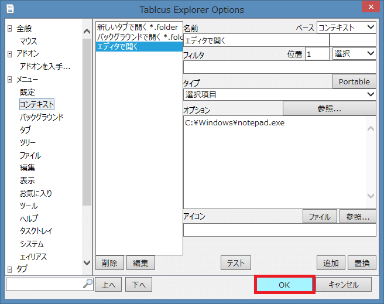

|
Tablacus Explorer 右クリックのカスタマイズ方法
|

|
Tablacus Explorerの右クリックはオプションのコンテキスト・バックグラウンド・タブ・ツリー・タスクトレイ・システムから設定します。
| コンテキスト | フォルダビュー（リスト表示）の項目上での右クリック |
| バックグラウンド | フォルダビュー（リスト表示）の項目がない場所での右クリック |
| タブ | タブ上での右クリック |
| ツリー | フォルダツリーでの右クリック |
| タスクトレイ | タスクトレイでの右クリック |
| システム | タイトルバー上での右クリック |
フォルダビュー（リスト表示）の項目上での右クリックに「エディタで開く」を追加してみましょう。
ツール→オプションを選択します。

メニューの「コンテキスト」を押します。

名前欄に「エディタで開く」と入力して下さい。

タイプを「選択項目」に変更します。

オプションの「参照...」を押して「アプリで開く...」を選びます。

エディタソフトを選択して「開く(O)」を押して下さい。

「追加」をクリックしてコンテキスト（フォルダビューの項目上での右クリック）にエディタで開くを追加します。

「OK」をクリックすると完了です。
